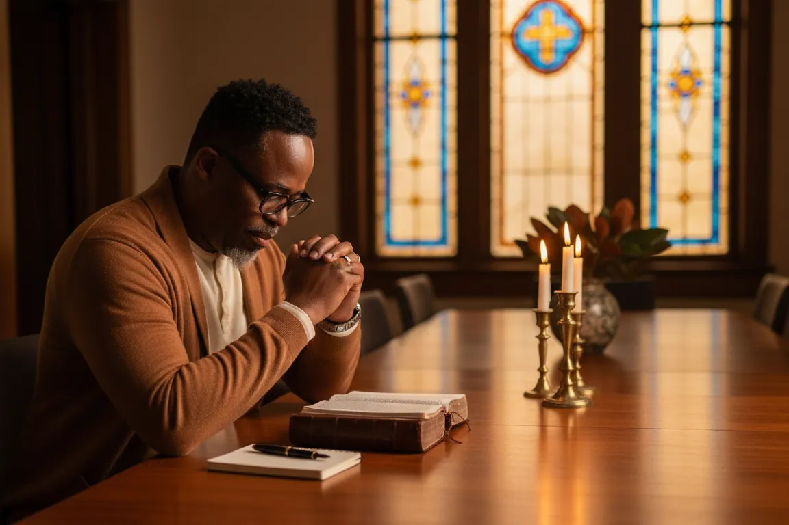

Our story
It started with a question at 3:30 in the morning.
How ten years of lessons became Wisdom Is Currency, and why its door is open to anyone who wants to build.

Ten years ago God woke me at three-thirty in the morning. That wasn’t unusual. He would wake me at that hour from time to time, usually to pray. But this night I walked into my dark living room, sat down in a chair, and felt no pull to pray at all. Just stillness. I knew He was there.
Then, clear as anything I’ve ever heard, He asked me a question.
“Do you know how to master time?”
I answered honestly. No, Lord. I don’t.
“You master time the same way a believer masters money.”
I knew what that meant, so I said it: the tithe.
“Yes. Give Me a tithe of your time, and I will show you the secrets to mastering time.”
A tithe of twenty-four hours is about two and a half. I told Him yes. Then, for about five years, I did everything except what I’d promised. I worked sixty and seventy hours a week. I was surviving, never thriving, and I never had time. I was always catching up.
When I finally gave Him the first two and a half hours of my day, the first idea came within a couple of weeks: a simple headshot offer, priced in a way that made no sense to me, using the studio I already had. I obeyed anyway. It worked. More money, less time, less strain.
Then the money got good, and I started shaving my mornings. An hour instead of two and a half. I’ll make it up tomorrow. The wheel kept spinning on momentum for a while, then it slowed, and about a year later I was closing my studio door.
So I went back to God with a better prayer: teach me the mechanics. Why did it work, and why did it stop? I spent the next two years studying, and one of the first places He took me was Proverbs, where wisdom is described in the language of money. Her profit is better than silver. Her gain is better than fine gold.
That was the revelation. Wisdom is an actual currency. Heaven gives it liberally to anyone who asks, and it converts on earth into ideas, value and provision.
Looking back, the decade wasn’t the promise failing. It was the curriculum: the covenant, the cycle, the long seasons of waiting, what real wealth is, and finally what my own work is worth. Wisdom Is Currency is that curriculum, opened up to everyone.
Why it exists
I don’t think I’m rare. There are a lot of us: believers, builders, people with notebooks full of ideas and minds that never stop. Many of us carry two quiet wounds. The first says something must be wrong with me, because the vision never makes it out of my head. The second says wanting to prosper is unspiritual.
Nothing is wrong with you. You were never handed the system, and nobody told you the truth about what your wisdom is worth. Both of those can be fixed, one week at a time, in the company of people building the same way.
Where it started
Wisdom Is Currency began as an economic empowerment ministry of Greater Works Church, with the blessing of Bishop Joe Halman and Pastor Debra Halman. We announced it to the congregation in September 2026 and held the first Thursday gathering on September 10.
It didn’t stay inside the walls for long. Within days, people were joining from other states. When we asked the first members what they wanted to build, nobody wrote “more money.” The word that came up most was legacy.
Greater works than these shall he do.
Today the door is open to anyone, in church or not, who wants to build with wisdom. The faith is the foundation. You’re welcome at the table either way.
Read the launch briefing we prepared for Bishop and Pastor Halman
Come see for yourself on Thursday.
Join free and the Zoom link comes straight to your email. Every Thursday at 7 PM Eastern.